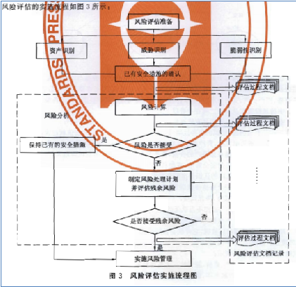
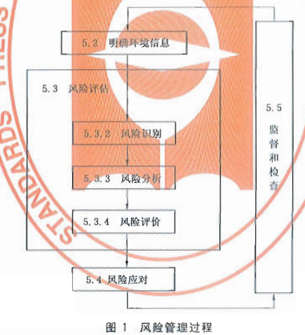

信息安全从业人员
Table of Contents
- 1 《风险管理专业级》范围与要求
2 考试范围ine-
- 2.1 项目管理基础(2级)contain
- 2.1.1 参考文献er-1
- 2.1.2 各科目考试范围" class
- 2.1 项目管理基础(2级)contain
1 《风险管理专业级》范围与要求
| 课程名称 | 课程类型 | 选择范围 | 所占比例 |
|---|---|---|---|
| 项目管理基础(II 级) | 通用课程 | 全部 | 10% |
| 信息安全技术(I 级) | 通用课程 | 3,4,5,6 | 10% |
| 风险管理(II 级) | 专业课程 | 全部 | 70% |
| 通信技术基础 | 附加课程 | 全部 | 10% |
2 考试范围
2.1 项目管理基础(2级)
2.1.1 参考文献
- <信息安全保障人员认证考试辅导丛书>
- 给出项目管理的期刊
- 给出香炉管理证书出版文献
- PMP相关书籍
- Prince2相关书籍
2.1.2 各科目考试范围
- 项目管理基本概念(2级 10%)
- 正确理解项目的本质
- 正确理解管理的本质
- 掌握项目管理的基本分类
- 熟练掌握 项目管理的生命周期与流程
- 掌握 项目管相对其他管理的特性
项目管理的发展历史与现状
- 了解项目管理的发展过程
- 了解国际项目管理的发展现状
- 了解国际国内项目管理人员认证情况
九大项目管理知识领域
- 数量掌握 项目综合管理,项目范围管理,项目时间管理,项目成本管理,项目质量管理,项目人力资源管理,项目沟通管理,项目风险管理和项目采购管理思想和方法.
- 掌握 项目综合管理,项目范围管理,项目时间管理,项目成本管理,项目质量管理,项目人力资源管理,项目沟通管理,项目风险管理和项目采购管理工具和实施技巧.
开发类项目管理技巧
- 掌握 开发类项目管理的特点
- 掌握 开发类项目项目生命周期
- 正确掌握 开发类项目九大管理知识领域特性.
- 实践 一个完整的开发类defrost项目实践过程.
集成类项目管理技巧
- 掌握 集成类项目管理的特点
- 掌握 集成类项目生命周期
- 掌握 集成类项目九大管理知识领域特性
- 实践 一个完整的集成类项目过程
- 信息安全技术(1级 10%)
3.信息安全技术- 了解网络安全技术的范畴
- 了解网络边界划分原则与方法
- 了解典型的网络安全问题
- 了解典型的网络攻击手段
- 了解网络边界防御原理与方法
- 了解典型的网络边界防御设备的系统原理与应用方法(网关防御,网络监控,网络交换).
- 了解网络通信安全原理与方法
- 了解典型的网络通讯安全设备的系统原理与应用方法(访问控制,通信加密).
4.平台安全技术
- 了解常用系统平台(UNIX, Linux, Windows)的典型安全问题
- 了解常用的应用支撑平台(WEB, 数据库等)的典型的安全问题.
- 了解各类安全漏洞的管理标准与方法.
- 了解典型的对平台攻击手段.
- 了解主机安全防护的主要手段(安全加固, 安全监控, 安全审计, 主机保护等)的原理与实施方法及其工具.
- 了解桌面系统的典型安全问题
- 了解桌面系统的安全保障的方法与工具.
5.应用安全技术
- 了解各类常用应用系统(通用应用系统,专业应用系统,特殊业务系统等)的典型安全问题.
- 了解安全软件开发过程管理与控制.
- 了解典型的应用安全漏洞
- 了解应用软件安全测试方法与工具.
6.数据安全技术
- 了解数据安全的范畴
- 了解数据生命周期的各阶段安全需求
- 了解数据生命周期的各阶段安全保障技术与方法.
- 了解灾难备份与恢复技术
- 风险管理(2级 70%)
- 1.风险管理的业界标准与实践
- 理解GB/T 24353
1.1 风险管理原则
- 控制损失,创造价值
- 融入组织管理过程
- 支持决策过程
- 应用系统的,结构化的方法
- 以信息为基础
- 环境依赖
- 广泛参与,充分沟通
- 持续改进
1.2 风险管理过程
- 明确环境信息 1.外部环境信息 2.内部环境信息 3.确定风险准则
- 风险评估（风险识别、风险分析、风险评价）
- 风险应对（选择风险应对措施、制定风险应对计划）
- 监督和检查
- 沟通与记录
1.3 风险管理实施–风险管理体系的要素
- 风险管理方针–应明确的事项 1.组织的风险管理理念 2.组织的最高管理者对风险管理的承诺 3.组织的风险管理目标 4.组织的风险偏好 5.风险管理方针与组织的目标及其他方针之间的关系 6.风险管理的职责分配 7.风险管理的程序和方法 8.风险管理的资源配置 9.测量和报告风险管理绩效的方式 10.建立风险管理体系的计划 11.继续改进的承诺
- 适当的制度和程序，是风险管理嵌入到组织的所有活动和过程中
- 与组织结构相关的职责，及有关的与组织的绩效指标一致的风险管理绩效指标
- 资源分配
- 与所有利益相关者沟通风险管理的机制
- 技术手段、方法、工具等
- 理解GB/T 20984
- 了解各行业的信息安全风险管理指引
- 理解GB/T 24353
1.1 风险管理原则
- 2.风险管理的实施过程
- 了解风险管理的全过程(4个步骤)
- 明确环境信息：明确风险管理目标，确定与组织相关的内部和外部参数，并设定风险管理的范围和有关风险准则。
- 风险评估：包括风险识别、风险分析与风险评价。
- 风险应对：选择并执行一种或多种改变风险的措施，包括改变风险事件发生的可能性和后果。递进的循环过程。
- 监督和检查：定期对风险与控制进行监督和检查。
- 沟通和记录：成功的风险评估依赖于与利益相关方的有效沟通和协商。
- 了解风险管理准备工作(如组织与规划) 的主要方法
规划阶段是要明确安全建设的目的,对安全建设目标实现的可能行进行分析病设计出总体方案.为了保证这些工作的完成,需要对每个工作任务中可以减少安全风险的还价或可能引入安全风险的换件进行安全风险管理.通过在项目规划阶段的风险管理来江都在项目后期处理相同安全封信啊所带来的高额成本.
- 了解风险评估主要方法与实施
风险评估主要 方法 如下所示:
- 故障树分析法
- 建造故障树
- 对故障树进行简化
- 定性分析
- 定量分析
- 故障模式影响及危害分析法(FMECA)
- 危害及可操作行分析法(HazOp)
- 事件树分析法(ETA)
- 原因-结果分析法(CCA)
- 风险模式影响及危害分析法(RMECA)
- 风险评审技术(VERT)
- 概率风险评估(PRA)&动态概率风险评估(DPRA)
- 层次分析法(AHP)
- 建立递阶层次结构模型
- 构造判断矩阵
- 层次单排序及一致性检验
- 层次总排序及一致性检验
- 故障树分析法
实施
- 风险评估准备
- 资产识别
- 威胁识别
- 脆弱性识别
- 风险分析
- 风险评估文档记录
具体如下图所示:

- 了解风险评估的报告格式与形成报告的方法
形成报告的方法
- 确保文档发布前是得到批准的
- 确保文档的更改和现行修订状态是可识别的
- 确保文档的发布得到适当的控制，并确保在使用时可获得有关版本的适用文档
- 防止作废文档的非预期使用，若因任何目的需保留作废文档时，应对这些文档进行适当的标识
- 规定其标识、存储、保护、检索、保存期限以及处置所需的控制
- 组织的管理者决定是否需要相关文档以及详略程度
格式
- 风险评估方案：阐述风险评估的目标、范围、人员、评估方法、评估结果的形式和实施进度等。
- 风险评估程序：明确评估的目的、职责、过程、相关的文档要求，以及实施本次评估所需要的各种资产、威胁、脆弱性识别和判断依据。
- 资产识别清单。
- 重要资产清单。
- 威胁列表：包括威胁名称、种类、来源、动机及出现的频率等。
- 脆弱性列表：包括脆弱性的名称、描述、类型及严重程度。
- 已有安全措施确认表。。。。。。
- 风险评估报告。。。。。。
- 风险处理计划。。。。。。
- 风险评估记录。。。。。。
- 了解风险处置主要方法与实施
对不可接受的风险应根据导致该风险的脆弱性制定风险处理计划。风险处理计划中应明确采取的弥补脆弱性的安全措施、预期效果、实施条件、进度安排、责任部门等。安全措施的选择应从管理与技术两个方面考虑，安全措施的选择与实施应参考信息安全的相关标准进行。
实施: 风险应对措施的制定和评估时一个递进的过程，对于风险应对措施，应评估其剩余风险是否可以承受。如果剩余风险不可承受，应调整或制定新的风险应对措施，并评估新的风险应对措施的效果，直到剩余风险可以承受。执行风险应对措施会引起组织风险的改变，需要跟踪、监督风险应对的效果和有关环境信息，并对变化的风险进行评估，必要时重新制订风险应对措施。风险应对措施可包含以下几项：
- 决定停止或退出可能导致风险的活动以及规避风险
- 增加风险或承担新的风险以寻求机会
- 消除具有负面影响的风险源
- 改变风险事件发生的可能性的大小及其分布的性质
- 改变风险事件发生的可能后果
- 转移风险
- 分担风险
- 保留风险等
- 了解风险管理的全过程(4个步骤)
- 3.风险管理工具使用*
- 了解典型的风险管理工具(技术,管理两类工具)
- 技术(具体内容见page35 信息安全风险评估教程 )
- 脆弱点评估工具(漏洞扫描工具)
- 渗透性测试工具
- 管理型信息安全风险评估工具主要分为三类(具体内容见page30,信息安全风险评估教程 )
- 基于国家和政府颁布的信息安全管理标准或指南的风险评估工具,如CRAMM,RA/SYS
- 基于专家系统的风险评估工具,如COBRA,@RISK,BDSS
- 基于定性和定量算法的风险评估工具,如CONTROL-IT,JANBER(定性). @RISK,BDSS, RISKWATCH(定性与定量结合)
- 技术(具体内容见page35 信息安全风险评估教程 )
- 了解典型的风险管理工具(技术,管理两类工具)
- 4.典型风险处理措施
- 了解典型的风险管理具体的处理措施.
- 明确环境信息：明确风险管理目标，确定与组织相关的内部和外部参数，并设定风险管理的范围和有关风险准则。
- 风险评估：包括风险识别、风险分析与风险评价。
- 风险应对：选择并执行一种或多种改变风险的措施，包括改变风险事件发生的可能性和后果。递进的循环过程。
- 监督和检查：定期对风险与控制进行监督和检查。
- 沟通和记录：成功的风险评估依赖于与利益相关方的有效沟通和协商。

- 了解典型的风险管理具体的处理措施.
- 5.风险管理实例*
- 了解主要行业的典型安全风险特性.
- 了解1-2个行业的典型风险管理实例.
在信息安全风险评估教程 这本书的page114,有信息安全 风险评估 案例,题目要求的是 风险管理 案例,风险管理的案例暂时没有找到,后续会再找一下,若实在找不到就先使用这个.
- 1.风险管理的业界标准与实践
- 通信技术基础(10%)
- 1.通信的基本概念*
1.理解通信的本质含义及电信概念 2.理解通信网络形成过程 3.了解通信网络结构 4.了解通信网络中的安全属性 5.了解通信网络应用分类 6.了解“网络”习惯分类 7.了解通信网络安全问题本质成因
- 2.通信协议及应用*
- 熟悉OSI七层模型
- 熟悉TCP/IP协议族的基本协议及TCP/IP协议族存在的固有安全问题.
- 熟悉IPv6,移动互联网等技术及应用
- 了解典型的通信网络及设备.
- 3.安全通信协议*
- 了解典型的安全通信协议.
- 了解典型的安全通信协议在通信过程中的应用.
- 1.通信的基本概念*